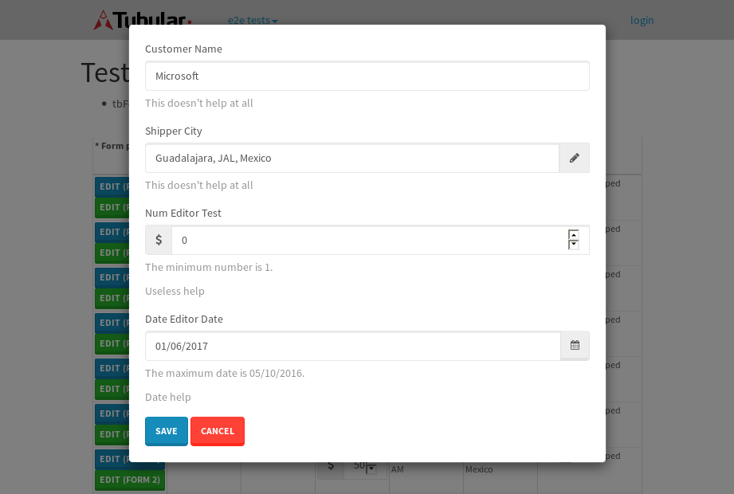

tbColumn.Grid Sorting - 31.247sTests: 5Skipped: 0Failures: 0 should sort data in ascending order then on descending order when sorting by Order Id column - 8.314sTests passed: 100.00%should order data in ascending order when click-sorting an unsorted text column - 5.355sTests passed: 100.00%should order data in descending order when click-sorting an ascending-sorted text column - 6.084sTests passed: 100.00%should order data in ascending order when click-sorting an unsorted date column - 5.407sTests passed: 100.00%should order data in descending order when click-sorting twice an unsorted date column - 6.086sTests passed: 100.00%
tbColumn.Grid Components - 4.077sTests: 3Skipped: 0Failures: 0 should print grid - 1.572s***Skipped***Tests passed: 0%should export grid - 1.415s***Skipped***Tests passed: 0%should show column selector - 1.09sTests passed: 100.00%
tbSingleForm.Form validations - 2.533sTests: 2Skipped: 0Failures: 0 should have an empty required field - 1.593sTests passed: 100.00%should not be able to click on save - 0.94sTests passed: 100.00%
Tubular Filters.tbColumnFilter - 110.374sTests: 12Skipped: 0Failures: 0 should cancel filtering when clicking outside filter-popover - 9.495sTests passed: 100.00%should disable Value text-input for "None" filter - 6.831sTests passed: 100.00%should disable apply button for "None" filter - 6.551sTests passed: 100.00%should decorate popover button when showing data is being filtered for its column - 12.024sTests passed: 100.00%should correctly filter data for the "Equals" filtering option - 8.541sTests passed: 100.00%should correctly filter data for the "Not Equals" filtering option - 8.877sTests passed: 100.00%should correctly filter data for the "Contains" filtering option - 8.914sTests passed: 100.00%should correctly filter data for the "Not Contains" filtering option - 9.526sTests passed: 100.00%should correctly filter data for the "Starts With" filtering option - 7.187sTests passed: 100.00%should correctly filter data for the "Not Starts With" filtering option - 6.964sTests passed: 100.00%should correctly filter data for the "Ends With" filtering option - 7.152sTests passed: 100.00%should correctly filter data for the "Not Ends With" filtering option - 6.826sTests passed: 100.00%
Tubular Filters.tbColumnDateTimeFilter - 138.68sTests: 12Skipped: 0Failures: 0 should cancel filtering when clicking outside filter-popover - 7.557sTests passed: 100.00%should disable Value text-input for "None" filter - 6.613sTests passed: 100.00%should disable apply button for "None" filter - 6.966sTests passed: 100.00%should clear filtering when clicking on Clean button - 18.535sTests passed: 100.00%should decorate popover button when showing data is being filtered for its column - 12.384sTests passed: 100.00%should correctly filter data for the "Equals" filtering option - 7.309sTests passed: 100.00%should correctly filter data for the "Not Equals" filtering option - 7.442sTests passed: 100.00%should correctly filter data for the "Between" filtering option - 12.423sTests passed: 100.00%should correctly filter data for the "Greater-or-equal" filtering option - 12.942sTests passed: 100.00%should corretlly filter data for the "Greater" filtering option - 12.511sTests passed: 100.00%should correctly filter data for the "Less-or-equal" filtering option - 11.565sTests passed: 100.00%should correctly filter data for the "Less" filtering option - 11.537sTests passed: 100.00%
Tubular Filters.tbColumnOptionsFilter - 85.601sTests: 3Skipped: 0Failures: 0 should cancel filtering when clicking outside filter-popover - 10.274sTests passed: 100.00%should decorate popover button when showing data is being filtered for its column - 12.085sTests passed: 100.00%should filter column-elements in accordance to the selected filter when selecting a single option - 51.793sTests passed: 100.00%
Tubular Filters.tbTextSearch - 50.314sTests: 5Skipped: 0Failures: 1 min-chars is not set - 0.869sTests passed: 100.00%should filter data in searchable-column customer name to matching inputted text, starting from 3 characters - 7.243sTests passed: 100.00%should filter data in searchable-column shipper city to matching inputted text, starting from 3 characters - 12.575sTests passed: 100.00%should show clear button when there is inputted text only - 6.849sTests passed: 100.00%should clear filtering when clicking clear button - 17.079sExpected 10 not to be 10.✗Tests passed: 0.00%
tbForm related components.tbCheckboxField - 10.374sTests: 2Skipped: 0Failures: 0 should save changes on "SAVE" - 3.974sTests passed: 100.00%should discard changes on "CANCEL" - 2.569sTests passed: 100.00%
tbForm related components.tbDropDownEditor - 13.126sTests: 5Skipped: 0Failures: 0 should set initial input value to the value of "value" attribute when defined - 2.416sTests passed: 100.00%should show the component name value in a label field when "showLabel" attribute is true - 1.826sTests passed: 100.00%should show a help field equal to this attribute, is present - 1.806sTests passed: 100.00%should submit modifications to item/server when clicking form "Save" - 3.573sTests passed: 100.00%should NOT submit modifications to item/server when clicking form "Cancel" - 2.474sTests passed: 100.00%
tbForm related components.tbTextArea - 17.483sTests: 7Skipped: 0Failures: 0 should set initial input value to the value of "value" attribute when defined - 1.587sTests passed: 100.00%should be invalidated when the number of chars is not in the range of "min" and "max" attributes - 2.905sTests passed: 100.00%should show the component name value in a label field when "showLabel" attribute is true - 1.929sTests passed: 100.00%should show a help field equal to this attribute, is present - 1.649sTests passed: 100.00%should require the field when the attribute "required" is true - 2.309sTests passed: 100.00%should submit modifications to item/server when clicking form "Save" - 3.769sTests passed: 100.00%should NOT submit modifications to item/server when clicking form "Cancel" - 2.372sTests passed: 100.00%
tbForm related components.tbDateEditor - 19.246sTests: 6Skipped: 0Failures: 4 should set initial date value to the value of "value" attribute when defined - 2.47sExpected false to be true.✗Tests passed: 0.00%should be invalidated when the date is not in the range of "min" and "max" attributes - 3.126sExpected false to be true.✗Expected 1 to be less than 1.✗Tests passed: 33.33%should show the component name value in a label field when "showLabel" attribute is true - 2.872sTests passed: 100.00%should show a help field equal to this attribute, is present - 2.426sTests passed: 100.00%should submit modifications to item/server when clicking form "Save" - 3.184sExpected false to be true.✗Tests passed: 0.00%should NOT submit modifications to item/server when clicking form "Cancel" - 3.04sExpected false to be true.✗Tests passed: 0.00%
tbForm related components.tbTypeaheadEditor - 19.049sTests: 7Skipped: 0Failures: 1 should show an options list when there is an API-info/component entered-data - 2.485sTests passed: 100.00%should select the option clicked - 2.611sTests passed: 100.00%should show a "delete" button when an option/match is selected, and delete the option if button is clicked - 2.625sFailed: each key must be a number of string; got boolean✗Tests passed: 50.00%should show a label value equal to the component name when "showLabel" attribue is true - 2.045sTests passed: 100.00%should require a value when "require" attribute is true - 2.263sTests passed: 100.00%should submit modifications to item/server when clicking form "Save" - 3.791sTests passed: 100.00%should NOT submit modifications to item/server when clicking form "Cancel" - 2.268sTests passed: 100.00%
tbForm related components.tbSimpleEditor - 23.76sTests: 9Skipped: 0Failures: 1 should set initial input value to the value of "value" attribute when defined - 2.376sTests passed: 100.00%should be invalidated when the number of chars is not in the range of "min" and "max" attributes - 3.007sTests passed: 100.00%should show the component name value in a label field when "showLabel" attribute is true - 1.666sTests passed: 100.00%should set input placeholder to the value of "placeholder" attribute - 2.721sTests passed: 100.00%should validate the control using the "regex" attribute, if present - 2.056sFailed: each key must be a number of string; got function✗Tests passed: 0.00%should show a help field equal to this attribute, is present - 1.879sTests passed: 100.00%should require the field when the attribute "required" is true - 2.429sTests passed: 100.00%should submit modifications to item/server when clicking form "Save" - 3.988sTests passed: 100.00%should NOT submit modifications to item/server when clicking form "Cancel" - 2.499sTests passed: 100.00%
tbForm related components.tbNumericEditor - 20.177sTests: 7Skipped: 0Failures: 0 should set initial component value to the value of "value" attribute when defined - 2.214sTests passed: 100.00%should be invalidated when the entered number is not in the range of "min" and "max" attributes - 2.737sTests passed: 100.00%should show the component name value in a label field when "showLabel" attribute is true - 2.008sTests passed: 100.00%should show a help field equal to this attribute, is present - 2.108sTests passed: 100.00%should require the field when the attribute "required" is true - 2.707sTests passed: 100.00%should submit modifications to item/server when clicking form "Save" - 3.96sTests passed: 100.00%should NOT submit modifications to item/server when clicking form "Cancel" - 3.215sTests passed: 100.00%
tbForm Connection Error - 2.359sTests: 1Skipped: 0Failures: 0 tbForm connection error functionality - 0.38sTests passed: 100.00%
tbForm Connection Error - 2.332sTests: 1Skipped: 0Failures: 0 tbForm connection error functionality - 0.414sTests passed: 100.00%
tbForm Connection Error - 2.943sTests: 1Skipped: 0Failures: 1 tbForm connection error functionality - 0.641sExpected '' to equal 'No data found'.✗Tests passed: 0.00%
tb Form Date Editor.tbDateEditor - 19.107sTests: 6Skipped: 0Failures: 0 should set initial date value to the value of "value" attribute when defined - 2.172sTests passed: 100.00%should be invalidated when the date is not in the range of "min" and "max" attributes - 3.594sTests passed: 100.00%should show the component name value in a label field when "showLabel" attribute is true - 1.975sTests passed: 100.00%should show a help field equal to this attribute, is present - 2.329sTests passed: 100.00%should submit modifications to item/server when clicking form "Save" - 3.305sTests passed: 100.00%should NOT submit modifications to item/server when clicking form "Cancel" - 3.695sTests passed: 100.00%
tbGridComponents - 9.132sTests: 6Skipped: 0Failures: 0 should add item with newRow method - 1.977sTests passed: 100.00%should add item with newRow method and cancel action - 0.745sTests passed: 100.00%should update item with tbSaveButton - 2.054sTests passed: 100.00%should update item with tbSaveButton and cancel action - 0.908sTests passed: 100.00%should remove item with tbRemoveButton - 0.991sTests passed: 100.00%should remove item with tbRemoveButton and cancel action - 0.898sTests passed: 100.00%
tbGridPager.navigation buttons - 9.055sTests: 1Skipped: 0Failures: 0 should perform no action when clicking on the numbered navigation button corresponding to the current-showing results page - 1.686sTests passed: 100.00%
tbGridPager.navigation buttons.first/non-last results page related functionallity - 3.336sTests: 2Skipped: 0Failures: 0 should disable "first" and "previous" navigation buttons when in first results page - 1.579sTests passed: 100.00%should enable "last" and "next" navigation buttons when in a results page other than last - 1.757sTests passed: 100.00%
tbGridPager.navigation buttons.last/non-first results page related functionallity - 4.032sTests: 2Skipped: 0Failures: 0 should disable "last" and "next" navigation buttons when in last results page - 1.902sTests passed: 100.00%should enable "first" and "previous" navigation buttons when in a results page other than first - 2.13sTests passed: 100.00%
tbGridPager.page navigation - 7.24sTests: 5Skipped: 0Failures: 0 should go to next results page when clicking on next navigation button - 1.427sTests passed: 100.00%should go to previous results page when clicking on previous navigation button - 1.562sTests passed: 100.00%should go to last results page when clicking on last navigation button - 1.378sTests passed: 100.00%should go to first results page when clicking on first navigation button - 1.416sTests passed: 100.00%should go to corresponding results page when clicking on a numbered navigation button - 1.457sTests passed: 100.00%
tbGridPagerInfo - 4.905sTests: 2Skipped: 0Failures: 0 should show text in accordance to numbered of filter rows and current results-page - 1.613sTests passed: 100.00%should show count in footer - 0.429sTests passed: 100.00%
tbHttp - 24.163sTests: 8Skipped: 0Failures: 0 should be authenticated - 3.312sTests passed: 100.00%retrieve data - 2.87sTests passed: 100.00%should not login bad credentials - 2.384sTests passed: 100.00%should have a refresh token - 2.684sTests passed: 100.00%should remove authentication - 4.052sTests passed: 100.00%get method-Is not authenticated - 2.504sTests passed: 100.00%post method-Is not authenticated - 3.494sTests passed: 100.00%should regenerate access token on post - 2.863sTests passed: 100.00%
LocalData.Grid Local Data Sorting - 8.108sTests: 4Skipped: 0Failures: 1 should order data in ascending order when click-sorting an unsorted text column - 2.121sTests passed: 100.00%should order data in descending order when click-sorting an ascending-sorted text column - 2.017sTests passed: 100.00%should correctly filter data for the "Contains" filtering option - 1.742sFailed: Element is not enabled✗Tests passed: 0.00%should correctly filter data for the "Contains" with ENTER key - 2.226sTests passed: 100.00%
OData.Grid OData Sorting - 42.112sTests: 7Skipped: 0Failures: 1 should order data in ascending order when click-sorting an unsorted numeric column - 7.392sTests passed: 100.00%should order data in descending order when click-sorting an ascending-sorted numeric column - 5.679sTests passed: 100.00%should order data in ascending order when click-sorting an unsorted text column - 5.69sTests passed: 100.00%should order data in descending order when click-sorting an ascending-sorted text column - 7.164sTests passed: 100.00%should order data in ascending order when click-sorting an unsorted date column - 6.238sTests passed: 100.00%should order data in descending order when click-sorting an ascending-sorted date column - 6.608sTests passed: 100.00%should correctly filter data for the "Contains" filtering option - 3.334sFailed: Element is not enabled✗Tests passed: 0.00%
tbPageSizeSelctor - 21.024sTests: 4Skipped: 0Failures: 0 should filter up to 10 data rows per page when selecting a page size of "10" - 3.433sTests passed: 100.00%should filter up to 20 data rows per page when selecting a page size of "20" - 2.529sTests passed: 100.00%should filter up to 50 data rows per page when selecting a page size of "50" - 6.192sTests passed: 100.00%should filter up to 100 data rows per page when selecting a page size of "100" - 7.123sTests passed: 100.00%
tbRowSelectable - 14.651sTests: 2Skipped: 0Failures: 0 selected rows - 8.856sTests passed: 100.00%unselected rows - 4.221sTests passed: 100.00%
tbSingleForm.Form fields - 14.869sTests: 7Skipped: 0Failures: 1 should load correct info - 1.073sTests passed: 100.00%should change customer name - 0.996sTests passed: 100.00%should save it - 3.493sFailed: Element is not enabled✗Tests passed: 0.00%should clear the inputs - 1.447sTests passed: 100.00%should update - 2.066sTests passed: 100.00%should reset editor - 2.751sTests passed: 100.00%should not save if not Changes - 3.042sTests passed: 100.00%
tbSingleForm.Form validations - 2.077sTests: 2Skipped: 0Failures: 0 should load correct info - 0.829sTests passed: 100.00%should not be able to click on save - 1.247sTests passed: 100.00%
tubularTemplateServiceModule.#createColumns() - 1.825sTests: 2Skipped: 0Failures: 0 should return an array with 7 elements - 1.034sTests passed: 100.00%first element should match - 0.791sTests passed: 100.00%
tubularTemplateServiceModule.#generateFieldsArray() - 1.711sTests: 2Skipped: 0Failures: 0 should return an array with 7 elements - 0.867sTests passed: 100.00%first element should match - 0.843sTests passed: 100.00%
tubularTemplateServiceModule.#generatePopup() - 0.733sTests: 1Skipped: 0Failures: 0 should html match - 0.733sTests passed: 100.00%
tubularTemplateServiceModule.#getEditorTypeByDateType() - 4.679sTests: 4Skipped: 0Failures: 0 should be tbDateTimeEditor - 0.782sTests passed: 100.00%should be tbNumericEditor - 1.277sTests passed: 100.00%should be tbCheckboxField - 0.922sTests passed: 100.00%should be tbSimpleEditor - 1.697sTests passed: 100.00%
tubularTemplateServiceModule.#generateForm() - 2.91sTests: 3Skipped: 0Failures: 0 should single layout html match - 1.439sTests passed: 100.00%should two columns layout html match - 0.736sTests passed: 100.00%should three columns layout html match - 0.735sTests passed: 100.00%
tubularTemplateServiceModule.#generateCells() - 0.749sTests: 1Skipped: 0Failures: 0 should html match - 0.749sTests passed: 100.00%
tubularTemplateServiceModule.#generateGrid() - 1.147sTests: 1Skipped: 0Failures: 0 should html match - 1.147sTests passed: 100.00%


{kind=link}